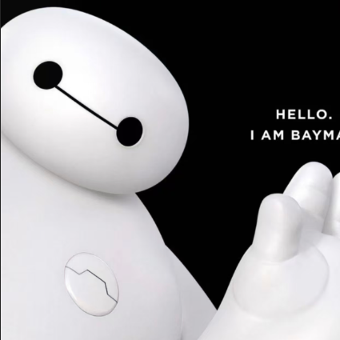
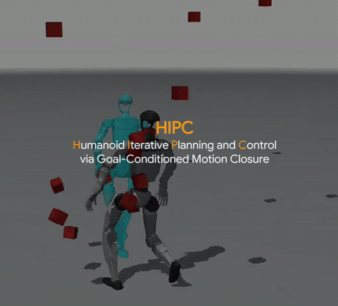
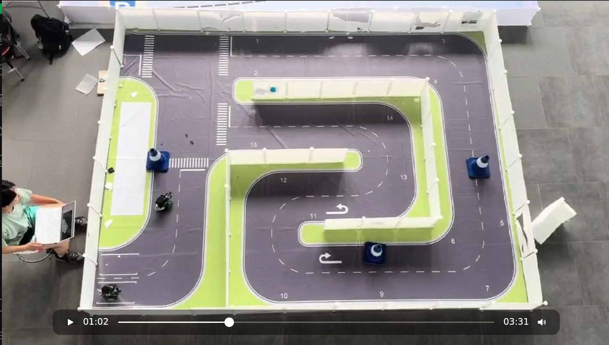
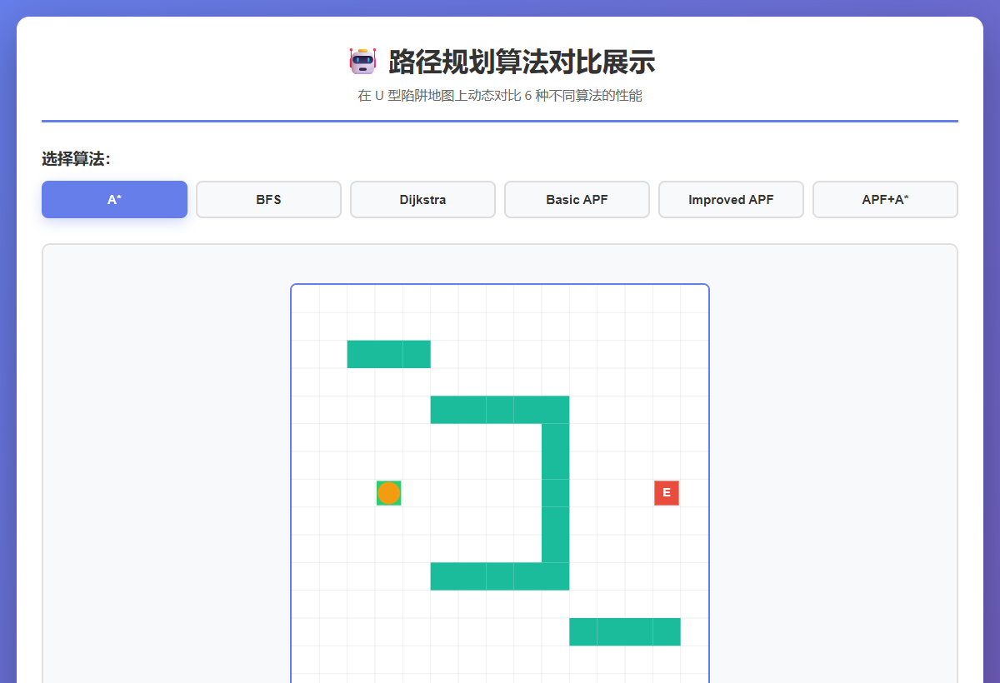

Zixuan Lang | 郎子萱
I am a junior undergraduate studying Data Science at
Tongji University.
My research interest is how to enable humanoid robots to perform object interactions in a scene (HOI & HSI)

Selected Work
Selected publications and robotics projects in humanoid control, autonomous navigation, and path planning.

HIPC: Humanoid Iterative Planning and Control via Goal-Conditioned Motion Closure
Yi Han, Xingyu Chen, Zixuan Lang, Qianyang Wu, Yuhang Lin, Ji Ma, Liang Li, Dongting Li, Xinpeng Liu, Ruoli Dai, Hesheng Wang, Renjing Xu, Lei Han
Project Page
/
Paper
Paper · Humanoid Robotics
A real-time humanoid iterative planning-and-control framework that closes the loop between a generative motion model and whole-body tracking, enabling robust goal reaching, perturbation resistance, and fall recovery.






Open-source Projects
Public code and experiments from my GitHub.